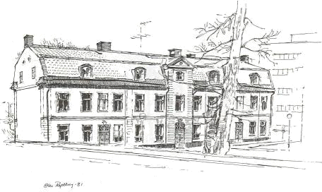
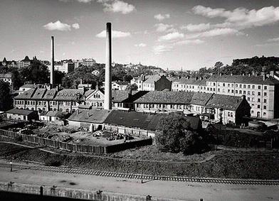
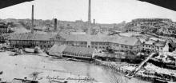
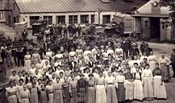
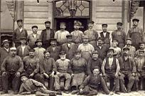
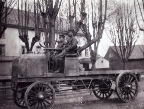

|
Ur Se på Söder, Olle Rydberg, 1986
En upplysningens apostel
Hovingska malmgården, Tegelviksgatan 13


Färgaren Carl Gustav Hovings överdådiga malmgård vid Danviken, ritad av arkitekten Casper Christian
Friese, vittnar om härliga tider för färgerihanteringen år 1770 då huset byggdes. Ändå fanns konkurrens
på nära håll. Vid Stadsträdgårdsgatan (Malmgårdsvägen) drev Ludwig Herpel färgerirörelse i
Färgaregården och på tomten bredvid den verkade en släkting till Hoving i samma bransch.
Kring Hammarbysjön existerade vid den här tiden några betydande kattuntryckerier, där De Broens
på Stora Sickla och Lilla Blecktornet kämpade om marknaden med Mallets Fredriksdahl vid Skanstull.
På Barnängen verkade bröderna Apiarie. De hade god avkastning på sin klädestillverkning. Troligen
fick Hoving en del uppdrag från detta håll.
Det vackra huset vid Danviken kallas också Hiertas malmgård, eftersom Aftonbladets grundare och
chefredaktör, Lars Johan Hierta, gav byggnaden en central plats i den 1841 från Liljeholmen flyttade
stearinfabriken. Hierta besökte år 1837 London och gjorde där bekantskap med
stearinljustillverkningen. Metoden hade experimenterats fram i Frankrike i början av 1800-talet och
vidareutvecklats av Chevreul och Gay-Lassac. Genom en f d kammarherre hos Frankrikes Karl X, de
Milly, som startade en ljusfabrik i Berriere de L'Etofe, kom stearinljus ut på marknaden men först blott
som dyrbar lyxvara. Runt om i Europa satte man nu igång med ljustillverkning.
|

|
|
Som pionjär i Sverige började Hierta tillsammans med den tekniskt kunnige Johan Michaelson 1839 en
första tillverkning. Den skedde i ett mindre
trähus på Liljeholmen intill Liljeholmsviken. Redan ett par år efteråt överflyttades produktionen till den
Hovingska malmgården vid Danviken. Fabriken, som Hierta sedermera drev i förening med Reinhold
Gullberg, fick senare konkurrens av såväl Lars Monten & Co:s Clara Tekniska Fabrik som Kungsholms
Tekniska Fabrik, ägd av firma Hylin & Co. Liljeholmens stearinfabrik gick dock segrande ur kampen, till en
del tack vare en överenskommelse med Hylins, som avstod från sin stearinljustillverkning helt och hållet.
Liljeholmens skulle i sin tur avstå från att producera varor som konkurrerade med Hylins.
|
Danvikens, som jag såg det, dystra fabriksbyggnader från början av vårt sekel har jämnats med
marken, varvid malmgården fördelaktigt frilagts. Kanske har Per Anders Fogelströms socialskildringar
gjort det lättare för stadens ansvariga att riva hela anläggningen.
|
På senare år har det annars kommit i ropet att också bevara gamla fabriker. Av Söders forna
industribyggnader återstår i dag blott några få. Till dem hör före detta Stille-Werners komplex på
Mosebackeplatån (nu KF:s arkitektkontor), klassat som byggnadsminne samt fastigheterna som rymde
Stockholms skofabrik och Luth & Rosen.
|
|

|
Uppiffad, fräsch, välputsad och försedd med ett dekorativt tak av plattor i bikupsmönster, framträder Hovings
malmgård som en arkitektonisk klenod. Med en genomgripande renovering för några år sedan har byggnaden
genomgått en metamorfos och man kan fråga sig om den någonsin har framträtt med samma eleganta värdighet
som nu.
|

Hela personalen. Vänstra bil nr 1: K. Lindqvist, K. Walström. Högra bil nr 1: Reinhold Liljekvist o. sonen Gustaf. 1905
|
|
Staden äger fastigheten och man skulle kunna vänta sig någon social institution inom väggarna, men så är
inte fallet. Lokalerna disponeras i stället av ett modernt dataföretag. Vi får hoppas att datafolket känner
suset av kulturhistoriens vingslag över sina huvuden och väl förstår att akta och bevara det ärevördiga
gamla huset.
Att Hierta lämnade malmgården 1848 var en följd av engagemanget i den sidenfabrik, som han lät uppsätta på
Barnängen. Den kom att verka i 18 år. Själv tog han Barnängens huvudbyggnad i besittning som privatbostad.
Liljeholmens stearinfabrik kan 1901 ha varit det första företaget
|
i landet som hade en lastbil för sina
transporter. Enligt Sten Holmberg i "Storstockholm, dess uppkomst och kommunikationer" var fordonet en
tvåcylindrig Daimler från Tyskland med ett underutvecklat tändsystem, som åstadkom motorstopp vid
starkare drag! Det här monstret till automobil, som gjorde tjänst ända till 1916, hade stålskodda ekerhjul av
trä och bakhjul stora som på en prärievagn. Chauffören satt på en bänk ett par meter över marken, utan skydd
av vare sig vindruta
eller tak. Men så gick det knappast fortare än i promenadtakt.
|
Det flera ton tunga fordonet hade under några veckor 1899 använts i Stockholms stadstrafik som omnibus på
sträckan Observatorieplan - Drottninggatan - Rödbotorget. Längre stod folk inte ut med det tunga bullrande
eländet, som kom husen att skaka sönder där det drog fram. I egenskap av persontransportör hade åkdonet då en
täckt kaross med sittplatser - ett arrangemang som hos Liljeholmens byttes till ett enkelt lastbilsflak.
|

Manliga arbetare. 1904
|
|
Uppvuxen i Liljeholmens industriområde reagerade jag i min ungdom mot att man kallade en fabrik i bortersta
änden av Södermalm för Liljeholmens stearinfabrik. Vid mognare år fick jag veta anledningen.
|
|
|

Danviksgatan 10. Den första bilen 1900, köpt genom herr Gusten Lind, Norrköping. Chaufför Karl Lindqvist.
|
Sedan april 1971
är fabrikationen koncentrerad till Oskarshamn, fortfarande under samma ursprungsbeteckning. Liljeholmen som
stadsdel i Stockholm tror jag Oskarshamnsborna är ganska främmande för. Men likt svenskar i allmänhet känner
de säkert till namnet i samband med ljusen av märket Liljeholmens, som alltjämt lyser överallt i våra kyrkor och
sprider stämning i svenska hem - inte bara i juletid.
|
|
{kind=link}
{kind=link}
{kind=link}
{kind=link}
{kind=link}